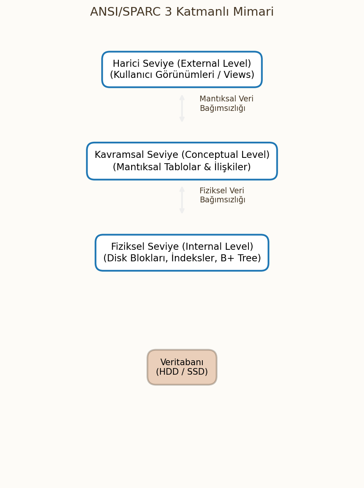
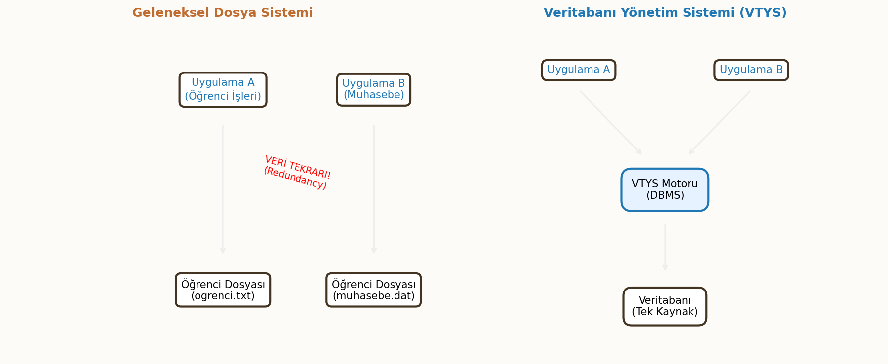

Veri Tabanı Yönetim Sistemleri (VTYS) Giriş
Bu ders notları, Veri Tabanı Yönetim Sistemleri (VTYS) dersinin temel kavramlarını, mimarisini ve tasarım süreçlerini kapsamaktadır.
1. Giriş ve Temel Kavramlar
Veritabanı sistemlerinin temelini anlamak için öncelikle veri ve bilgi kavramlarını hiyerarşik bir yapıda incelemek gerekir.
Veri ve Bilgi İlişkisi (DIKW Piramidi)
Veri yönetimi süreçlerinde bilgi hiyerarşisi DIKW (Data, Information, Knowledge, Wisdom) modeli ile tanımlanır.
- Veri (Data): Ham gerçeklerdir. İşlenmemiştir ve tek başına anlam ifade etmez. (Örn:
38,Mavi). - Enformasyon (Information): Verinin işlenmiş, ilişkilendirilmiş ve bağlam kazanmış halidir. (Örn:
Hava Sıcaklığı 38°C). - Bilgi (Knowledge): Enformasyonun deneyim, kurallar ve analizle birleşerek karar verme yetisine dönüşmesidir. (Örn:
38°C ateş yüksek kabul edilir). - Bilgelik (Wisdom): Bilginin ne zaman ve nasıl uygulanacağına dair üst düzey kavrayıştır.

Veri Türleri
Veriler yapısal özelliklerine ve saklanma biçimlerine göre üç ana kategoride incelenir:
- Yapısal Veri (Structured Data): Belirli bir şeması ve formatı vardır. İlişkisel veritabanlarında (RDBMS) satır ve sütun formatında tutulur. (Örn: SQL Tabloları).
- Yarı Yapısal Veri (Semi-Structured Data): Tam bir tablo yapısı yoktur ancak etiketler (tags) ile hiyerarşi içerir. (Örn: JSON, XML, HTML).
- Yapısal Olmayan Veri (Unstructured Data): Belirli bir formatı yoktur. Sorgulanması ve analizi zordur. (Örn: Video, ses, metin belgeleri, PDF).
2. Dosyalama ve Veri Erişim Yaklaşımları
Klasik Dosyalama
Veritabanı sistemlerinden önce, her uygulama kendi verisini işletim sistemi üzerindeki dosyalarda (txt, dat vb.) saklardı. Bu yaklaşım veri tekrarına, tutarsızlığa ve güvenlik açıklarına neden olmuştur.
Erişim Yöntemleri
Veriye ulaşmak için kullanılan temel algoritmalar şunlardır:
- Sıralı Erişim (Sequential Access):
- Veriye ulaşmak için önceki tüm kayıtların okunması gerekir.
- Manyetik teyp mantığıdır.
- Karmaşıklık: Ortalama $O(N)$.
- Doğrudan Erişim (Direct Access):
- Kaydın adresi veya anahtarı bilindiğinde doğrudan o konuma gidilir.
- Disk (HDD/SSD) ve RAM erişim mantığıdır. Index veya Hashing kullanılır.
- Karmaşıklık: Genellikle $O(1)$ veya $O(\log N)$.
3. Bilgi Sistemleri ve VTYS'ye Giriş
Bilgi Sistemleri ve Bileşenleri
Veriyi toplayan, saklayan, işleyen ve dağıtan sistemlerdir. 5 temel bileşeni vardır:
- Donanım: Fiziksel cihazlar (Sunucu, Disk).
- Yazılım: İşletim sistemi, VTYS.
- Veri: Sistemin hammaddesi.
- Ağ: İletişim altyapısı.
- İnsan: Kullanıcılar (DBA, Son Kullanıcı, Geliştirici).
Veri Tabanı Temel Kavramlar
- Veritabanı (Database): Belirli bir amaca yönelik, birbiriyle ilişkili verilerin düzenli topluluğudur.
- Mini Dünya (Universe of Discourse - UoD): Veritabanının gerçek dünyada modellediği kısımdır (Örn: Üniversite DB için Öğrenci ve Dersler).
Veri Tabanı Yönetim Sistemi (VTYS)
Veritabanlarını tanımlamak, oluşturmak ve yönetmek için kullanılan yazılımdır (Oracle, MySQL, PostgreSQL, SQL Server).

Sınav Bilgisi: Dosya Sistemi vs. VTYS
Aşağıdaki karşılaştırma tablosu sınavlar için kritiktir:
| Özellik | Geleneksel Dosya Sistemi | VTYS (Veritabanı) |
|---|---|---|
| Veri Tekrarı | Yüksek (Redundancy) | Kontrol Altında (Normalization) |
| Tutarlılık | Düşük | Yüksek (Consistency constraints) |
| Veri Paylaşımı | Zor | Kolay (Concurrency Control) |
| Veri Bağımsızlığı | Yok (Program-Data Dependence) | Var (Fiziksel/Mantıksal Bağımsızlık) |
4. VTYS Temel Bileşenleri
VTYS, kullanıcı ile veritabanı arasında bir arayüz sağlar ve aşağıdaki dilleri/modülleri içerir:
Veritabanı Dilleri
- DDL (Data Definition Language): Veritabanı şemasını tanımlar.
CREATE TABLE Ogrenci (No INT, Ad VARCHAR(50)); - DML (Data Manipulation Language): Veri üzerinde işlem yapar (CRUD).
SELECT * FROM Ogrenci WHERE No = 1; - SQL (Structured Query Language): İlişkisel veritabanları için standart dildir.
- Genişletilmiş Programlama Dili: SQL'e prosedürel özellikler katar (T-SQL, PL/SQL).
Veritabanı Yöneticisi Alt Bileşenleri
- Bellek Yöneticisi (Storage Manager): Verinin diskte fiziksel saklanmasını yönetir.
- Dosya Yöneticisi (File Manager): Disk alanının tahsisi ve dosya yapılarını yönetir.
- Tampon Yöneticisi (Buffer Manager): Veriyi diskten RAM'e (Cache) getirir. Performans için kritiktir.
- Hareket Yöneticisi (Transaction Manager): İşlemlerin bütünlüğünü (ACID) ve eşzamanlılığı sağlar.
5. Veri Modelleri
Veri modeli, verinin mantıksal yapısını ve ilişkilerini belirleyen kurallar setidir.
Veri Modeli Türleri
- Hiyerarşik Model: Ağaç yapısı (Tree). Ebeveyn-Çocuk ilişkisi (1:N). (Örn: IBM IMS).
- Ağ Modeli: Graf yapısı (Graph). Bir kaydın birden fazla ebeveyni olabilir.
- İlişkisel Model (Relational): Veriler 2 boyutlu tablolarda tutulur. Matematiksel küme teorisine dayanır.
- Varlık-İlişki Modeli (ER Model): Tasarım aşamasında kullanılan kavramsal modeldir.
- Nesneye Yönelik Model (OODBMS): Veriyi nesneler (object) olarak saklar.
- NoSQL Modeller: Büyük veri ve esneklik için geliştirilmiştir (Document, Key-Value, Graph, Columnar).
6. VTYS Mimarisi
Veri bağımsızlığını sağlamak için ANSI/SPARC 3 Katmanlı Mimari kullanılır.
3 Katmanlı Yapı
- Harici Seviye (External Level): Kullanıcıların veriyi gördüğü kısımdır (Views). Her kullanıcıya farklı görünüm sunulabilir.
- Kavramsal Seviye (Conceptual Level): Veritabanının mantıksal yapısıdır (Tablolar, İlişkiler). Fiziksel detaylar gizlidir.
- Fiziksel Seviye (Physical Level): Verinin diskte nasıl saklandığı (Byte, Index, Blok) ile ilgilidir.
Veri Bağımsızlığı
- Fiziksel Veri Bağımsızlığı: Fiziksel saklama yapısındaki değişikliğin (örn: HDD -> SSD, yeni indeks) kavramsal şemayı etkilememesidir.
- Mantıksal Veri Bağımsızlığı: Kavramsal şemadaki değişikliğin (örn: yeni sütun ekleme) harici şemaları (uygulamaları) bozmamasıdır.
Kullanım Türleri (Mimariler)
- 1 Katmanlı: Kullanıcı ve veritabanı aynı makinadadır (Mainframe).
- 2 Katmanlı (Client-Server): İstemci uygulaması ve Veritabanı sunucusu ayrıdır.
- 3 Katmanlı: İstemci -> Uygulama Sunucusu -> Veritabanı Sunucusu (Web tabanlı sistemler).
7. Veritabanı Tasarım Aşamaları
Veritabanı tasarımı sistematik bir süreçtir ve 4 ana aşamadan oluşur.
Aşama 1: Gereksinim Analizi
Sistemin ne yapacağı, hangi verilerin saklanacağı ve kullanıcı ihtiyaçları belirlenir.
Aşama 2: Kavramsal Tasarım (Conceptual Design)
VTYS'den bağımsız modelleme yapılır. Çıktı ER Diyagramlarıdır. Varlıklar, nitelikler ve ilişkiler tanımlanır.
Aşama 3: Mantıksal Tasarım (Logical Design)
Kavramsal modelin seçilen VTYS tipine (genellikle İlişkisel) dönüştürülmesidir.
- ER diyagramları Tablolara dönüşür.
- Primary Key (PK) ve Foreign Key (FK) belirlenir.
- Normalizasyon işlemi uygulanarak veri tekrarı önlenir.
Matematiksel Gösterim: İlişki
İlişkisel modelde bir tablo (Relation), matematiksel olarak alanların (domain) kartezyen çarpımın bir alt kümesidir: $$ r(R) \subseteq D_1 \ast D_2 \ast \dots \ast D_n $$ Burada $D_i$, $i$. sütunun değer kümesidir.
Aşama 4: Fiziksel Tasarım (Physical Design)
Performans optimizasyonu için dosya organizasyonu, disk yerleşimi ve indeksleme stratejileri belirlenir.